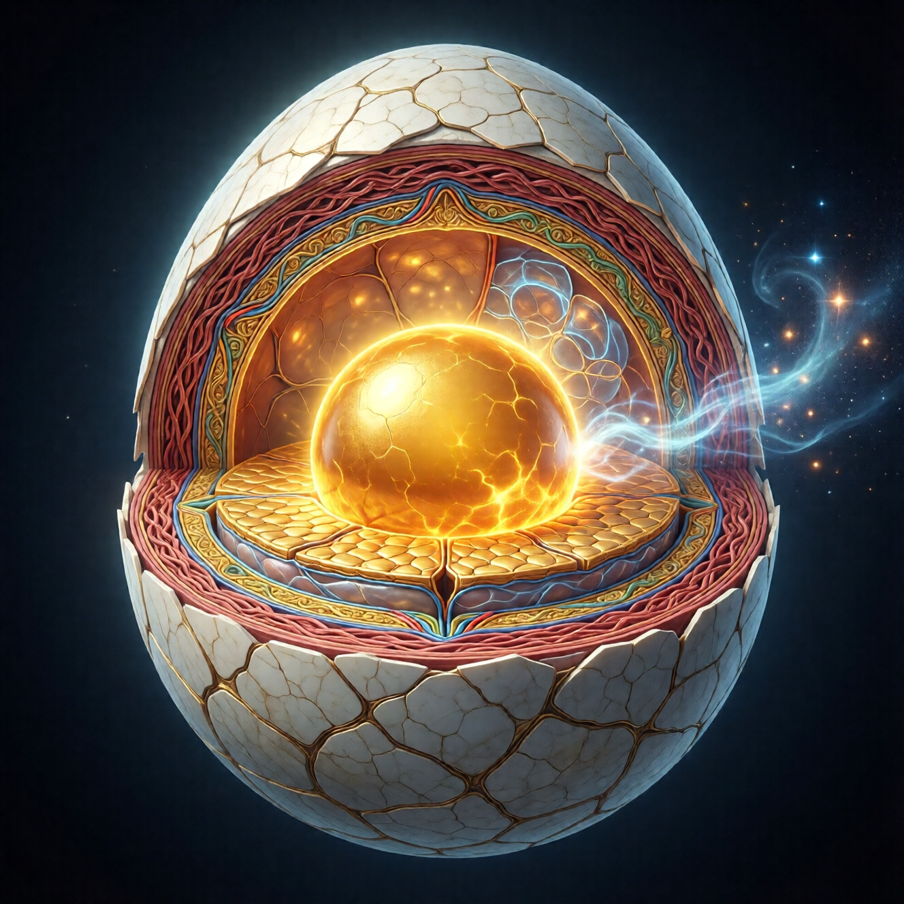

Анатомия яйца: желток, белок, скорлупа

Добро пожаловать на урок биологии
Если ты ожидал чего-то возвышенного — извини. Начнём с яиц.
Не с философских концепций. Не с санскритских терминов. С простого куриного яйца. Потому что это — самая точная метафора твоего положения прямо сейчас.
И нет, я не издеваюсь. Хотя немного — да.
Скорлупа: то, что ты называешь «миром»
Снаружи яйцо покрыто скорлупой. Твёрдой, кажущейся непроницаемой. Изнутри она выглядит как абсолютный предел реальности.
Это — твой мир. Все его законы, ограничения, «так было всегда», «это невозможно», «такова жизнь».
Знаешь этот момент, когда ты на работе в понедельник утром смотришь на монитор и думаешь: «Я буду делать это ещё сорок лет»? Это ты смотришь на скорлупу изнутри. И она кажется бесконечной.
Или когда родители говорят: «Все так живут, и ты будешь». Это они описывают скорлупу как единственную реальность. Потому что для них она такая и есть.
Скорлупа — не враг. Это важно понять сразу.
Скорлупа — защита. Пока ты не сформировался — внешний мир тебя убьёт. Буквально. Представь, что желток вытечет из яйца до того, как станет цыплёнком. Это не освобождение. Это омлет.
У меня был знакомый, который в 22 года решил, что «понял всё». Уволился, продал квартиру, поехал в Индию искать просветление. Через полгода вернулся без денег, без жилья, с дизентерией и глубокой депрессией. Это был омлет. Желток вытек до готовности.
Скорлупа держит безопасную среду. Она:
- Сохраняет тепло (ты не замерзаешь от экзистенциального ужаса)
- Защищает от ударов (бессмысленность не раздавливает)
- Не пускает бактерии (чужие безумные идеи не заражают)
- Создаёт стабильные условия для роста (ты созреваешь в своём темпе)
Да, она давит. Да, в ней тесно. Но это — часть дизайна, не баг.
Желток: твоя «жизнь»
Внутри скорлупы — желток. Яркий, питательный, тёплый. Это всё, что ты обычно называешь «своей жизнью»:
- События (от «опоздал на автобус» до «родился первенец»)
- Отношения (от «лайкнул сторис» до «двадцать лет брака»)
- Эмоции (от «бесит эта погода» до «я никогда не был так счастлив»)
- Работа (от «опять этот отчёт» до «получил повышение»)
- Достижения (от «дочитал книгу» до «защитил диссертацию»)
- Провалы (от «забыл пароль» до «потерял всё»)
Желток — питательная среда. Он не враг. Он не «майя» (хотя майя — тоже неплохая метафора). Он — еда.
Вот ты на работе. Коллега — идиот. Начальник — тиран. Проект — бессмысленный. Зарплата — смешная. Каждый день — день сурка.
Знаешь что? Это не ад. Это завтрак.
Каждый раз, когда ты злишься на коллегу — ты перевариваешь опыт границ. Каждый раз, когда терпишь начальника — учишься различать «надо» и «хочу». Каждый раз, когда делаешь бессмысленное — задаёшь вопрос «а что осмысленное?»
Страдание — калорийно. Потери — витаминизированы. Кризисы — протеин для роста.
Помнишь первую любовь? Как она закончилась? Как ты думал, что умрёшь? А потом выяснилось, что ты не умер. И даже стал как-то... больше. Понимаешь? Это был не просто «тяжёлый опыт». Это был обед из трёх блюд.
Это не значит, что нужно искать страдания. Это значит, что когда они случаются — они не бессмысленны.
Белок: защитный слой
Между желтком и скорлупой — белок. Прозрачный, вязкий, амортизирующий.
В нашей метафоре белок — это:
- Защитные механизмы психики («Я не злюсь, мне просто неинтересно»)
- Социальные нормы («Так принято», «Что люди скажут»)
- Усвоенные убеждения («Мужчины не плачут», «Женщина должна быть мягкой»)
- «Здравый смысл» («Не надо рисковать», «Стабильность важнее»)
- Привычные реакции («Когда мне плохо — я ем/пью/покупаю/смотрю сериалы»)
Белок смягчает удары. Когда скорлупа трескается — белок не даёт всему развалиться сразу. Он создаёт буфер между тобой и реальностью.
Вот пример. Ты узнаёшь, что мир — несправедлив. Что хорошие люди умирают рано, злые — процветают, а вселенной плевать на твои планы. Это — трещина в скорлупе. Холодный воздух снаружи.
Что делает белок? Подсовывает тебе мысль: «Ну, в целом-то справедливость есть, просто мы не видим всей картины. Карма там, или бог, или что-нибудь». И ты успокаиваешься. Буфер сработал.
Или вот. Ты понимаешь, что твоя работа — бессмысленна. Что ты делаешь то, что не нужно никому, включая тебя. Это — удар в скорлупу.
Что делает белок? «Зато стабильность. Зато ипотека. Зато что скажет мама». И ты идёшь дальше. Амортизация.
Проблема? Иногда белок становится слишком плотным. Настолько, что ты не можешь двигаться. Застреваешь в «правильных» реакциях, «нормальных» мыслях, «разумных» решениях.
Видел людей, которые на любой вопрос отвечают «всё хорошо»? Даже когда явно не хорошо? Даже когда жизнь разваливается? Это белок застыл. Защита стала тюрьмой.
И перестаёшь расти.
А где ты?
Вот главный вопрос: ты — это что?
Большинство людей думают, что они — желток. «Я — это моя жизнь, мой опыт, мои отношения, моя работа».
Спроси любого: «Кто ты?» Что ответят? «Я — Вася, менеджер среднего звена, женат, двое детей, ипотека». Это всё — желток. События, роли, обстоятельства. Питательная среда.
Некоторые думают, что они — белок. «Я — это мои убеждения, мои ценности, мой характер».
«Я — честный человек». «Я — интроверт». «Я — творческая личность». Это всё — белок. Защитные конструкции. Способы амортизации.
Единицы подозревают про скорлупу. «Может, мир — не то, чем кажется?»
Это те, кто в три часа ночи лежит и думает: «А что если всё это — не настоящее? Что если есть что-то ещё?» Обычно после этого они пугаются своих мыслей и включают Netflix. Белок срабатывает.
Но ты — не желток. Не белок. Не скорлупа.
Ты — то, что формируется в желтке. То, для чего желток существует. Цыплёнок, который пока не оформился до конца.
Сознание, которое питается опытом и постепенно понимает: яйцо — временная среда.
Три типа ощущений
Есть три уровня осознания:
Уровень 1: «Я — желток»
Это большинство. Они полностью отождествлены с жизнью: событиями, ролями, достижениями. Когда жизнь идёт хорошо — хорошо им. Когда плохо — плохо.
Они не знают про скорлупу. Они не знают про «снаружи». Для них мир — всё, что есть.
Это как рыба, которая не знает про воду. Какая вода? Вода — это всё. Другого не бывает.
Ты узнаешь их по фразам: «Надо просто хорошо устроиться». «Главное — стабильность». «Все проблемы от того, что денег мало».
Это не плохо. Это — стадия. Как младенец, который не знает, что есть что-то за пределами кроватки.
Уровень 2: «Что-то не так»
Это ты. Иначе бы не читал.
На этом уровне появляется дискомфорт. Смутное ощущение, что привычное — тесно. Что роли — жмут. Что «успех» не приносит удовлетворения.
Вот ты получил повышение. Все поздравляют. Ты улыбаешься. А внутри — тишина. Никакого «ура». Никакого «наконец-то». Просто... «и что?»
Или вот. Ты в отпуске. На пляже. Всё идеально. Коктейль, закат, любимый человек рядом. А ты смотришь на это и думаешь: «Почему мне не так хорошо, как должно быть?»
Это не депрессия (хотя может выглядеть похоже). Это — рост. Тебе тесно, потому что ты вырос.
Как подросток, которому вдруг стали малы все его детские вещи. Не потому что вещи испортились. А потому что он изменился.
Хорошая новость: дискомфорт — признак прогресса. Плохая новость: он не прекратится, пока не вылупишься.
Уровень 3: «Я — не яйцо»
Редкий уровень. Здесь человек не просто чувствует дискомфорт — он понимает его причину. Знает, что он — не желток, не белок, не скорлупа. А то, что готовится выйти.
На этом уровне страх трансформируется в предвкушение. Тесно — но понятно почему. И понятно, что делать.
Узнаёшь их по спокойствию. Не равнодушию — спокойствию. Они могут быть в полном хаосе, но внутри — ясность. Потому что они знают: это яйцо. Это временно. Это — инкубатор.
Почему тебе плохо (и это хорошо)
Дискомфорт — не ошибка. Дискомфорт — признак роста.
Когда эмбриону тесно в яйце — это не проблема, это прогресс. Если бы было удобно — значит, он не вырос.
Я знаю женщину, которая двадцать лет жила в «идеальном» браке. Муж хороший, дети прекрасные, дом — полная чаша. И она была в глубокой депрессии. Почему?
Потому что она выросла из этого яйца. Не из мужа, не из детей — из роли «хорошая жена и мать». Яйцо было отличным. Но она стала больше.
Мир не должен быть удобным. Мир должен быть достаточным для созревания.
«Мне здесь плохо» — первый признак того, что ты перерос.
Страдание бывает двух видов:
- От сопротивления росту — когда ты пытаешься остаться маленьким, а тебя распирает.
- От самого роста — когда расширяешься, и это больно.
Первое — бессмысленно. Второе — продуктивно.
Вот ты цепляешься за старые отношения, которые уже умерли. Тебе плохо. Это первый вид.
А вот ты отпускаешь их — и тебе тоже плохо. Но по-другому. С привкусом свободы. Это второй вид.
Как отличить? Просто: первое делает тебя меньше, второе — больше. После первого ты чувствуешь себя жертвой. После второго — усталым, но выросшим.
Тест: где ты?
Ответь честно:
- Твой дискомфорт усиливается или ослабевает со временем?
- Ослабевает (при тех же условиях) → ты адаптировался (застрял)
- Помогают ли обычные «лекарства»?
- Если да — ты ещё в желтке. Если всё меньше работает — созреваешь.
Помнишь, как раньше новый телефон радовал неделю? А теперь — день? Помнишь, как отпуск «перезаряжал» на полгода? А теперь хватает на неделю? Это оно.
- Есть ли ощущение поиска?
Читаешь книги, но не находишь ответа. Пробуешь практики, но чего-то не хватает. Разговариваешь с людьми, но никто не понимает. Знакомо?
- Как ты относишься к смерти?
- Любопытство? → признак созревания - Равнодушие? → либо зрелость, либо отключение (разберёмся позже)
Что делать с этим знанием?
Пока — ничего.
Серьёзно. Просто носи это знание. Не пытайся «применить». Не беги пробивать скорлупу лбом.
Я видел достаточно людей, которые прочитали одну книгу, послушали один подкаст — и побежали «просветляться». Один продал бизнес и ушёл в монастырь — через два месяца вернулся с нервным срывом. Другой бросил семью, потому что «они не понимают» — через год умолял взять обратно.
Цыплёнок не вылупляется, потому что решил вылупиться. Он вылупляется, когда созрел.
Твоя задача сейчас — понять, где ты. Не где ты хочешь быть. Не где тебе говорят быть. А где ты есть.
В следующей главе — тест посерьёзнее. Проверим, насколько ты готов к выходу.
Спойлер: скорее всего, меньше, чем думаешь. Но больше, чем боишься.
Вопросы для размышления
Не нужно отвечать сразу. Просто носи их с собой.- Когда ты впервые почувствовал, что «что-то не так» с этим миром? Сколько тебе было лет? Что произошло?
- Этот дискомфорт — от того, что мир плохой, или от того, что ты в нём не помещаешься? Честно?
- Если бы тебе стало полностью комфортно — ты бы обрадовался или испугался? Подумай об этом. Если комфорт пугает — ты уже знаешь, что застой опаснее боли.
- Что если твоя боль — не наказание, а индикатор? Как лампочка на приборной панели. Не «ты плохой», а «пора что-то менять».